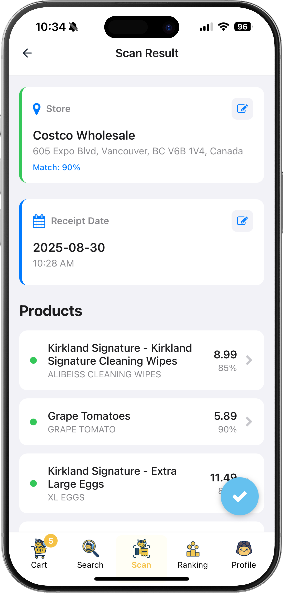
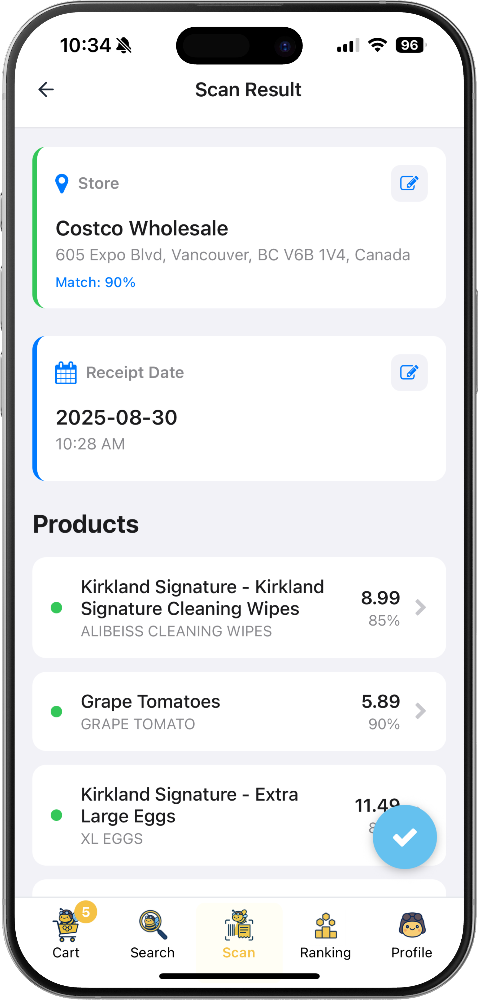
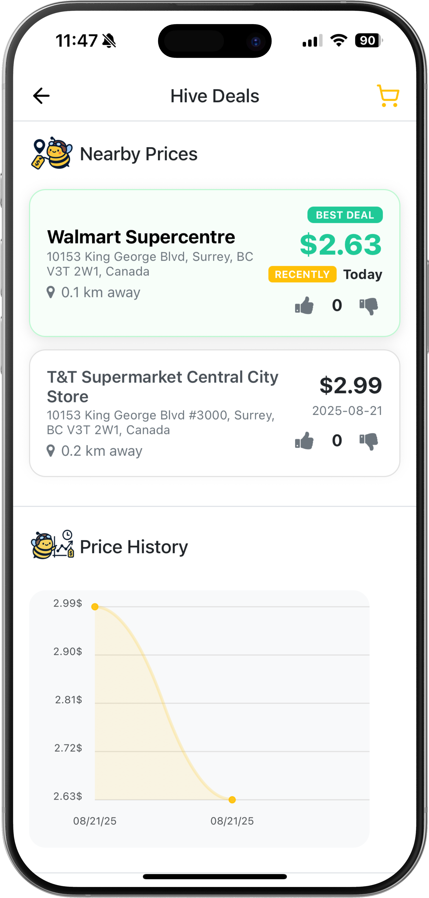
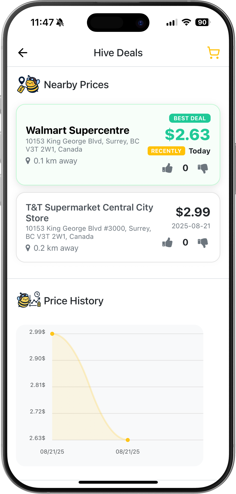

🧾
Receipt ingestion flow
“In the receipt scanning flow, we upload captured images to the backend and manage timeouts and retries, enabling users to review and edit items.”
Retail price intelligence
I led product engineering for Beezly’s MVP—turning receipt and barcode scans into trustworthy local price data for Vancouver’s first hive of shoppers.
Problem & context
Most price comparison apps rely on e-commerce feeds—Beezly had to crowdsource grocery receipts and barcodes while keeping the experience fast, delightful, and trustworthy for founding members.
Approach
I focused on three engineering pillars—accurate ingestion, trustworthy pricing intelligence, and actionable insights—so the founding team could prove product-market fit without technical debt.
“In the receipt scanning flow, we upload captured images to the backend and manage timeouts and retries, enabling users to review and edit items.”
“We rendered nearby store price cards and charts, enabling users to compare regional market rates.”
“We queued in-app notifications for key actions like barcode scanning and price registration, and displayed acquired badges/tier changes via follow-up toast notifications.”
System flows
I prototyped and productionised both flows end-to-end—from camera capture and background jobs to UI affordances that reward members for contributing data.
 

 

Early access
I shipped the live waitlist at beezly.app—anchoring the copy around “Join Vancouver’s first wave of early adopters” and “Every scan makes the hive smarter” to highlight the neighbourhood-first rollout and community flywheel.